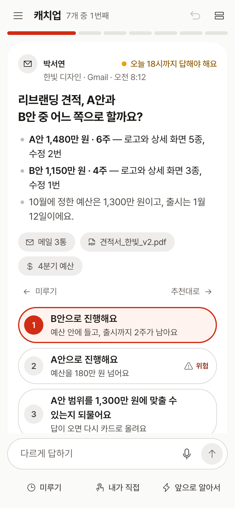
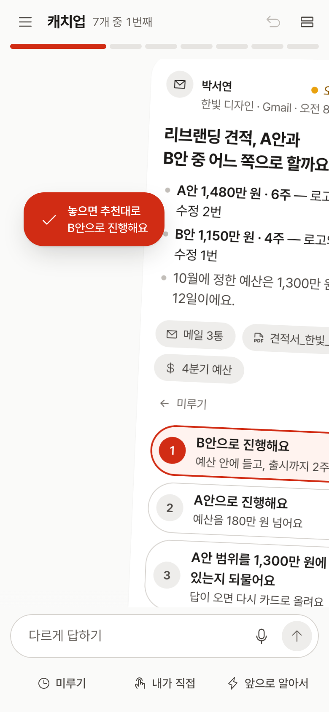
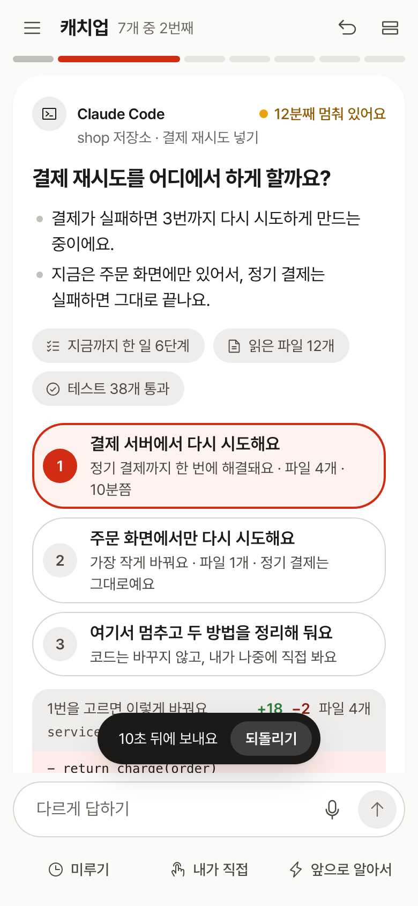
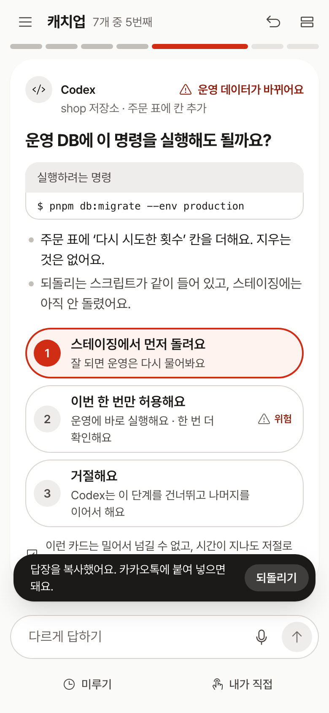

밀면 추천 답이 눌리고, 놓기 전에 무슨 일이 일어날지 보여요
오늘 만든 밀기는 동작은 맞지만, 카드 밖에 뜬 알약 하나가 전부라 급하게 붙인 기능처럼 보여요. Slack 캐치업 · Tinder · 메일 앱의 밀기와 Codex · ChatGPT · Claude의 결정 화면을 조사해, 밀기를 ‘추천 답을 누르는 또 하나의 방법’으로 다시 그렸어요. 화면 속 이름 · 숫자는 예시예요. 2026-11-22에 소유자가 이대로 구현하기로 했고, 15장의 여섯 가지를 모두 앱에 넣었어요.
추천 답 줄이 차올라요
미는 만큼 1번 줄이 빨강으로 채워져요. 다 차면 놓아도 된다는 뜻이에요. 눌러서 고를 때와 같은 줄, 같은 모양이에요.
토스트가 미리 보여요
놓으면 일어날 일과 나갈 글의 첫 줄이 아래에 먼저 서요. 놓으면 그 자리에서 ‘되돌리기’ 토스트가 돼요.
아래 단추의 자리가 방향이에요
왼쪽 단추는 미루기, 오른쪽 단추는 추천대로예요. 밀지 않아도 같은 일을 눌러서 할 수 있어요.
미는 동안 ‘무엇이 정해지는지’를 어디에 보여 줄까요
같은 순간(카드를 오른쪽으로 민 순간)을 세 가지로 그렸어요. CatchUp의 밀기는 좋다 · 싫다가 아니라 글이 나가는 결정이라서, 무엇이 누구에게 나가는지 보이는 쪽을 골랐어요. A를 추천해요.
추천 답 줄 + 미리 보이는 토스트
차올라요
핵심 한 수 · 밀기의 반응이 카드 안의 추천 답 줄에서 일어나요
좋은 점
- 누르기와 밀기가 같은 줄에서 같은 모양으로 끝나요
- 무엇이 누구에게 나가는지 놓기 전에 읽어요
- 새 색 · 새 부품이 없어요(
.picked, 토스트)
대가
- 줄을 두 겹으로 그려야 해요(채워진 모양을 겹쳐 잘라요)
- 추천 답이 화면 밖에 있는 긴 카드는 토스트만 보여요
카드 모서리에 큰 낱말
핵심 한 수 · 미는 만큼 진해지는 도장 하나. 모두가 아는 모양이에요
좋은 점
- 배울 것이 없어요
- 구현이 가장 쉬워요
대가
- ‘추천대로’가 무엇인지는 말하지 못해요
- 읽던 글을 도장이 덮어요
- 사람을 고르는 앱의 몸짓이라 일의 결정과 결이 달라요
선례 · Tinder의 LIKE · NOPE
카드가 비키면 색 판이 드러나요
핵심 한 수 · 메일 목록의 밀기를 카드 크기로 키워요
좋은 점
- 메일 앱에서 매일 쓰는 몸짓이에요
- 카드 안은 건드리지 않아요
대가
- 뒤판 자리에 다음 카드를 못 보여 줘요
- 카드만 한 빨강 면이 생겨요. 빨강은 누를 곳에만 쓰기로 했어요
- 아이콘과 낱말 하나라 나갈 글이 안 보여요
동작은 맞는데, 밀기가 카드와 따로 놀아요
오늘 만든 화면을 예시 자료로 띄우고 진짜 터치로 밀어서 찍었어요(아이폰 390 × 844). 반응이 카드 밖 알약 하나에만 있고, 카드 · 추천 답 · 아래 단추는 미는 동안 아무 말도 하지 않아요.

12
345
6
7- 밀 수 있다는 것을 회색 글 한 줄로 알려요. ‘← 미루기 · 추천대로 →’가 근거 알약과 선택지 사이에 끼어 있어요. 이름표처럼 읽히고, 선택지를 28만큼 아래로 밀어요. components/DecisionCard.tsx — .swipe-guide
- 아래 단추가 손동작과 이어지지 않아요. 미루기 · 내가 직접 · 앞으로 알아서 순서라, 어느 쪽으로 밀면 무엇이 되는지 단추에서 알 수 없어요. 오른쪽 밀기와 같은 일을 하는 단추도 없어요. screens/Catchup.tsx — .cu-pacts
- 안내가 카드 밖에 따로 떠서 읽던 글을 가려요. 167 × 64 알약이 손가락 위에 뜨는데, 그 자리가 요약 글 위예요. 추천 답 줄과는 300쯤 떨어져 있어요. DecisionCard.tsx — .swipe-under
- 카드가 비킨 자리가 비어 있어요. 다음 카드가 보이지 않아서 ‘덱을 넘긴다’는 느낌이 없어요. 넓은 화면의 아래 띠(
.cu-peek)도 좁은 화면에는 없어요. screens/Catchup.tsx — .cu-deck - 정해질 추천 답 줄은 그대로예요. 눌러서 고르는 것과 같은 일인데 그 줄에는 아무 변화가 없어요. 얼마나 더 밀어야 하는지도 흰 알약 → 빨간 알약 두 단계뿐이에요. DecisionCard.tsx — OptionRow
- 놓으면 카드가 그냥 바뀌고, 토스트가 다음 카드를 덮어요. 놓은 지 0.06초에 이미 다음 카드가 제자리에 있어요(날아가는 움직임 없음). 토스트는 다음 카드의 아래쪽 글 위에 떠요. components/useSwipe.ts — onPointerUp · app.css — .toasts.on-deck
- 위험한 카드는 밀어도 아무 반응이 없어요. 카드가 1도 움직이지 않아 고장처럼 보여요. 이유는 카드 맨 아래 한 줄에 있는데, 사진처럼 토스트에 가려지기도 해요. data/index.ts — swipeRules · useSwipe.ts
- 나갈 글을 못 보고 밀어요. 보낼 글 미리보기가 카드 위에서 742 아래에 있는데, 아래 단추 묶음이 720부터 덮어요. 스크롤하지 않으면 무엇이 나가는지 보이지 않아요. shots/probe.json — phone-rest: prev y 742 · dock y 720
- 손맛을 만드는 것이 빠져 있어요. 카드가 거리에 고정된 각도(60에 1도)로 기울 뿐이고, 돌아올 때 속도를 잇지 않는 0.2초 고정 움직임이에요. 문턱은 거리 110 하나라 빠르게 튕겨도 인정되지 않고, 문턱 근처에서 떨리는 것을 막는 여유도 없어요. components/useSwipe.ts — COMMIT · style
잘 만든 밀기는 ‘단추가 하는 일을 손으로 하는 것’이에요
밀기 제품(Slack 캐치업 · Tinder · 메일 앱), 사람에게 결정을 묻는 에이전트(Codex · ChatGPT · Claude Code · Linear), 움직임 지침(Apple · Android · WCAG)을 원문으로 읽었어요. 출처와 확인하지 못한 것은 레퍼런스 장에 있어요.
가져온 것
| 패턴 | 어디서 | 시안에서 |
|---|---|---|
| 같은 일을 하는 단추가 늘 보여요 | Superhuman의 아래 막대, Mailbox의 탭 메뉴, NN/g, WCAG 2.5.7 | 아래 단추의 자리가 미는 방향이에요. 밀어서만 되는 일은 없어요 |
| 문턱에서 모양이 바뀌어요 | Mailbox — 손을 뗄 때 보이는 것이 실행될 일. Apple HIG — 진동은 ‘제자리에 맞물릴 때’ | 줄이 다 차고, 숫자가 체크로, 고리가 흰 원으로. 진동 한 번 |
| 손가락을 그대로 따라와요 | WWDC18 Designing Fluid Interfaces | 잡은 자리 기준 1:1, 놓은 속도를 이어받는 스프링 |
| 다음 카드가 뒤에서 올라와요 | CardStackView(0.95 · 8), Android 뒤로 가기 미리 보기 | 크기 0.95 → 1. 놓기 전까지는 흐리게 둬요 |
| 확인창 대신 되돌리기 | Slack 캐치업의 Undo, NN/g, Raskin(2007), Gmail 보내기 취소 | 미리 보이던 토스트가 놓으면 되돌리기가 돼요 |
| 추천은 맨 위, 표시는 낱말 하나 | Codex의 질문 규격 — 추천을 첫 줄에, (Recommended) | 밀기의 반응이 1번 줄에서 일어나요 |
| 행동은 둘까지, 색은 하나에만 | OpenAI Apps SDK UI guidelines | 빨강은 추천 답 줄에만. 토스트 · 단추는 잉크색 |
| 거절이 곧 다르게 말하기 | Codex ‘No, and tell Codex what to do differently’, Claude Code의 Tab | 밀지 않을 때는 늘 아래에 있는 입력창으로 |
| 미는 동안에도 내용이 보여요 | NN/g — 밀기가 대상을 가리면 안 돼요 | 떠 있는 알약을 없애고, 토스트는 입력창 위 한 줄에 서요 |
| 넘긴 것은 그냥 안 읽음 | Slack 캐치업 — 새 상태를 만들지 않아요 | 알려만 드려요에서 왼쪽(나중에)은 읽음으로 치지 않아요 |
가져오지 않은 것
| 패턴 | 어디서 | 왜 |
|---|---|---|
| 카드 위의 도장 | Tinder의 LIKE · NOPE(널리 알려진 모습) | ‘추천대로’가 무엇인지 말하지 못하고, 읽던 글을 덮어요 |
| 줄 뒤의 색 판 | Gmail · Apple Mail | 다음 카드를 못 보여 주고, 카드만 한 빨강 면이 생겨요 |
| 민 거리로 다른 행동 | Mailbox(2013)의 짧게 · 길게, Apple Mail의 조금 · 끝까지 | 방향 하나에 행동 하나여야 실수하지 않아요. 글이 나가는 결정이에요 |
| 시간이 지나면 저절로 승인 | Jules의 계획 자동 승인 | 위험한 일은 저절로 정해지지 않기로 했어요. Claude Code의 권한 물음도 저절로 닫히지 않아요 |
| 아이폰 웹의 진동 우회 | Safari의 스위치 진동을 스크립트로 울리기 | 2025년에 막혔어요. 웹은 눈으로만, 진동은 앱에서 |
| 카드 속 탭 · 속 스크롤 | Apps SDK가 금지하는 것 | 카드는 한 번에 읽혀야 해요 |
| 색 옆줄 · 카드 속 카드 · 상태 점 남발 | ‘AI가 만든 티’를 다룬 글들(의견) | 디자인 시스템이 이미 금하는 것과 같아요 |
| 방향을 사용자가 정하기 | Superhuman · Gmail · Todoist | 지금은 방향 둘에 뜻 둘이에요. 설정은 쓰는 사람이 늘면 다시 봐요 |
| 카드 기울이기 | Tinder형 카드 밀기 구현들(10~25도) | 사진 한 장이 아니라 글이 많은 카드예요. 기울면 글줄이 뒤 카드와 겹쳐 난잡해요 |
밀기 한 번은 다섯 순간이에요
첫 카드(박서연 님의 견적 메일)를 오른쪽으로 밀어 정하는 1초예요. 아래 장들은 이 순간을 하나씩 키운 거예요.
결제 재시도를 어디에서 하게 할까요?
- 결제가 실패하면 3번까지 다시 시도하게 만드는 중이에요.
- 지금은 주문 화면에만 있어서, 정기 결제는 실패하면 그대로 끝나요.
리브랜딩 견적, A안과 B안 중 어느 쪽으로 할까요?
- A안 1,480만 원 · 6주 — 로고와 상세 화면 5종, 수정 2번
- B안 1,150만 원 · 4주 — 로고와 상세 화면 3종, 수정 1번
- 10월에 정한 예산은 1,300만 원이고, 출시는 1월 12일이에요.
결제 재시도를 어디에서 하게 할까요?
- 결제가 실패하면 3번까지 다시 시도하게 만드는 중이에요.
- 지금은 주문 화면에만 있어서, 정기 결제는 실패하면 그대로 끝나요.
리브랜딩 견적, A안과 B안 중 어느 쪽으로 할까요?
- A안 1,480만 원 · 6주 — 로고와 상세 화면 5종, 수정 2번
- B안 1,150만 원 · 4주 — 로고와 상세 화면 3종, 수정 1번
- 10월에 정한 예산은 1,300만 원이고, 출시는 1월 12일이에요.
결제 재시도를 어디에서 하게 할까요?
- 결제가 실패하면 3번까지 다시 시도하게 만드는 중이에요.
- 지금은 주문 화면에만 있어서, 정기 결제는 실패하면 그대로 끝나요.
리브랜딩 견적, A안과 B안 중 어느 쪽으로 할까요?
- A안 1,480만 원 · 6주 — 로고와 상세 화면 5종, 수정 2번
- B안 1,150만 원 · 4주 — 로고와 상세 화면 3종, 수정 1번
- 10월에 정한 예산은 1,300만 원이고, 출시는 1월 12일이에요.
결제 재시도를 어디에서 하게 할까요?
- 결제가 실패하면 3번까지 다시 시도하게 만드는 중이에요.
- 지금은 주문 화면에만 있어서, 정기 결제는 실패하면 그대로 끝나요.
리브랜딩 견적, A안과 B안 중 어느 쪽으로 할까요?
- A안 1,480만 원 · 6주 — 로고와 상세 화면 5종, 수정 2번
- B안 1,150만 원 · 4주 — 로고와 상세 화면 3종, 수정 1번
- 10월에 정한 예산은 1,300만 원이고, 출시는 1월 12일이에요.
결제 재시도를 어디에서 하게 할까요?
- 결제가 실패하면 3번까지 다시 시도하게 만드는 중이에요.
- 지금은 주문 화면에만 있어서, 정기 결제는 실패하면 그대로 끝나요.
그림으로는 손맛을 못 정해요. 여기서 밀어 보세요
아래 화면은 이 시안의 규격(11장)대로 움직이는 예시예요. 마우스나 손가락으로 카드를 끌어 보세요. 앱 코드가 아니라 시안용이고, 아무것도 보내지 않아요.
리브랜딩 견적, A안과 B안 중 어느 쪽으로 할까요?
- A안 1,480만 원 · 6주 — 로고와 상세 화면 5종, 수정 2번
- B안 1,150만 원 · 4주 — 로고와 상세 화면 3종, 수정 1번
- 10월에 정한 예산은 1,300만 원이고, 출시는 1월 12일이에요.
결제 재시도를 어디에서 하게 할까요?
- 결제가 실패하면 3번까지 다시 시도하게 만드는 중이에요.
- 지금은 주문 화면에만 있어서, 정기 결제는 실패하면 그대로 끝나요.
운영 DB에 이 명령을 실행해도 될까요?
- 주문 표에 ‘다시 시도한 횟수’ 칸을 더해요. 지우는 것은 없어요.
- 되돌리는 스크립트가 같이 들어 있고, 스테이징에는 아직 안 돌렸어요.
해 볼 것
웹에서는 진동이 안드로이드에서만 와요. 카드는 세 장이 되풀이돼요.
안내 글을 없애고, 단추의 자리로 방향을 알려요
지금은 회색 글 한 줄이 밀기를 설명해요. 그 줄을 빼고, 아래 단추 셋을 미는 방향대로 놓아요. 처음 한 번은 카드가 살짝 움직여 보여 주고, 그 뒤로는 아무것도 덧붙이지 않아요.
평소
결제 재시도를 어디에서 하게 할까요?
- 결제가 실패하면 3번까지 다시 시도하게 만드는 중이에요.
- 지금은 주문 화면에만 있어서, 정기 결제는 실패하면 그대로 끝나요.
리브랜딩 견적, A안과 B안 중 어느 쪽으로 할까요?
- A안 1,480만 원 · 6주 — 로고와 상세 화면 5종, 수정 2번
- B안 1,150만 원 · 4주 — 로고와 상세 화면 3종, 수정 1번
- 10월에 정한 예산은 1,300만 원이고, 출시는 1월 12일이에요.
- 카드 안에는 밀기 안내가 없어요. 추천 답은 지금처럼 빨간 테두리 하나로 충분해요. 선택지가 28만큼 위로 올라와 세 번째 답이 더 보여요.
- 왼쪽 단추는 미루기, 오른쪽 단추는 추천대로예요. 화살표가 붙은 단추는 밀어서도 된다는 뜻이에요. 밀기가 어려운 사람도 같은 일을 눌러서 해요(WCAG 2.5.7).
- ‘앞으로 알아서’는 아래에서 뺐어요. 같은 답이 쌓였을 때 토스트와 처리 기록에서 권하는 편이 맞아요(Q1).
처음 한 번 — 카드가 28만큼 다녀와요
결제 재시도를 어디에서 하게 할까요?
- 결제가 실패하면 3번까지 다시 시도하게 만드는 중이에요.
- 지금은 주문 화면에만 있어서, 정기 결제는 실패하면 그대로 끝나요.
리브랜딩 견적, A안과 B안 중 어느 쪽으로 할까요?
- A안 1,480만 원 · 6주 — 로고와 상세 화면 5종, 수정 2번
- B안 1,150만 원 · 4주 — 로고와 상세 화면 3종, 수정 1번
- 10월에 정한 예산은 1,300만 원이고, 출시는 1월 12일이에요.
- 첫 카드가 자리를 잡고 0.6초 뒤, 한 번만 움직여요. 오른쪽으로 28 갔다가 돌아오고, 그동안 추천 답이 그만큼 차올라요. 글 대신 움직임으로 배워요.
- 같이 움직이는 것은 오른쪽 단추 하나예요. 밀기를 한 번이라도 쓰면 다시 나오지 않아요. ‘움직임 줄이기’를 켠 기기에서는 나오지 않아요.
추천 답이 차오르고, 놓으면 일어날 일이 먼저 서요
지금은 떠 있는 알약이 ‘추천대로’라고만 말해요. 반응을 추천 답 줄로 옮기고, 놓으면 뜰 토스트를 미리 세워요. 무엇이 누구에게 나가는지는 놓기 전에 읽을 수 있어야 해요.
미는 중 — 문턱의 58%
결제 재시도를 어디에서 하게 할까요?
- 결제가 실패하면 3번까지 다시 시도하게 만드는 중이에요.
- 지금은 주문 화면에만 있어서, 정기 결제는 실패하면 그대로 끝나요.
리브랜딩 견적, A안과 B안 중 어느 쪽으로 할까요?
- A안 1,480만 원 · 6주 — 로고와 상세 화면 5종, 수정 2번
- B안 1,150만 원 · 4주 — 로고와 상세 화면 3종, 수정 1번
- 10월에 정한 예산은 1,300만 원이고, 출시는 1월 12일이에요.
- 1번 줄이 왼쪽부터 빨강으로 채워져요. 고른 뒤의 모양(
.cu-opt.picked)을 겹쳐 두고 민 만큼만 보여 줘요. 글자도 그 경계에서 흰색으로 바뀌어요. 다른 답은 그만큼 흐려져요. - 카드는 손가락을 그대로 따라와요. 잡은 자리가 손가락 아래에 그대로 있고, 그늘이 깊어져요. 기울이지는 않아요. 글줄이 기울면 뒤의 카드와 겹쳐 난잡해져서요. 뒤에서는 다음 카드가 올라오는데, 놓기 전까지는 흐리게 둬요.
- 놓으면 뜰 토스트가 미리 서요. 고리가 문턱까지 남은 만큼을 보여 주고, 둘째 줄에 나갈 글의 첫머리가 있어요. 입력창 위의 한 줄을 차지해서 카드를 덮지 않아요.
놓아도 돼요 — 문턱을 넘음
결제 재시도를 어디에서 하게 할까요?
- 결제가 실패하면 3번까지 다시 시도하게 만드는 중이에요.
- 지금은 주문 화면에만 있어서, 정기 결제는 실패하면 그대로 끝나요.
리브랜딩 견적, A안과 B안 중 어느 쪽으로 할까요?
- A안 1,480만 원 · 6주 — 로고와 상세 화면 5종, 수정 2번
- B안 1,150만 원 · 4주 — 로고와 상세 화면 3종, 수정 1번
- 10월에 정한 예산은 1,300만 원이고, 출시는 1월 12일이에요.
- 문턱을 넘는 순간은 ‘조금 더 진하게’가 아니라 모양이 바뀌어요. 줄이 다 차고, 숫자 1이 체크가 돼요. 앱에서는 이때 짧은 진동이 한 번 와요. 도로 당기면 16쯤 여유를 두고 풀려요.
- 토스트의 말이 ‘놓으면 …’으로 바뀌고 고리가 흰 원이 돼요. 빨강은 추천 답 줄에만 있고, 토스트는 잉크색이에요. 다른 두 단추는 흐려져요.
미리 보이던 토스트가 그 자리에서 되돌리기가 돼요
지금은 놓자마자 카드가 바뀌고, 토스트가 다음 카드 위에 떠요. 카드는 던진 속도 그대로 나가게 하고, 토스트는 미는 동안 서 있던 자리에서 말만 바꿔요. 확인창 없이 10초 되돌리기로 실수를 받아요.
결제 재시도를 어디에서 하게 할까요?
- 결제가 실패하면 3번까지 다시 시도하게 만드는 중이에요.
- 지금은 주문 화면에만 있어서, 정기 결제는 실패하면 그대로 끝나요.
- 고리가 남은 시간을 세요. 첫 줄은 언제 누구에게, 둘째 줄은 무엇으로 정했는지예요. 되돌리면 카드가 나간 쪽에서 다시 들어와요.
- 위 막대가 한 칸 넘어가요. 지난 칸은 회색, 지금 칸은 빨강이에요. 카드가 나가는 0.3초에 맞춰 움직여요.
- 되돌리기는 위에도 있어요. 토스트의 단추와 같은 일을 해요. 여러 장을 빠르게 넘겼을 때는 가장 최근 것부터 되돌려요. 넓은 화면의 키는 Z예요.
토스트의 말 — 답의 종류마다
첫 줄은 일어날 일, 둘째 줄은 그 내용이에요. 미는 동안 → 문턱을 넘으면 → 놓은 뒤 순서로 바뀌어요.
| 답의 종류 | 미는 동안 | 문턱을 넘으면 | 놓은 뒤 |
|---|---|---|---|
| 보내기 | 답장을 보내요 · 박서연 | 놓으면 보내요 · 박서연 | 10초 뒤에 보내요 · 되돌리기 |
| 에이전트에게 전하기 | Claude Code에게 전해요 | 놓으면 Claude Code에게 전해요 | 10초 뒤에 Claude Code에게 전해요 · 되돌리기 |
| 복사 | 답장을 복사해요 | 놓으면 답장을 복사해요 | 복사했어요. 카카오톡에 붙여 넣으면 돼요 · 되돌리기 |
| 기록만 | 확인했다고 적어 둬요 | 놓으면 확인했다고 적어 둬요 | 적어 뒀어요 · 되돌리기 |
| 미루기(왼쪽) | 미뤄 둬요 | 놓으면 미뤄요 | 오후 2시에 다시 올려요 · 되돌리기 |
| 위험한 카드 | 밀어서 정할 수 없어요 | (카드가 제자리로 돌아와요) | |
둘째 줄: 보내기 · 복사는 나갈 글의 첫머리, 전하기는 고른 답의 이름, 미루기는 다시 올릴 때예요. 초안을 고쳤으면 고친 글이 보여요.
미루기는 답을 건드리지 않고, 위험한 카드는 버티면서 이유를 말해요
왼쪽 밀기는 아무 답도 고르지 않아요. 그래서 선택지는 모두 흐려지고 토스트만 말해요. 위험한 카드는 지금 전혀 움직이지 않는데, 조금 따라오다 버티게 해서 ‘막혀 있다’는 것을 손으로 느끼게 해요.
왼쪽으로 — 문턱을 넘음
결제 재시도를 어디에서 하게 할까요?
- 결제가 실패하면 3번까지 다시 시도하게 만드는 중이에요.
- 지금은 주문 화면에만 있어서, 정기 결제는 실패하면 그대로 끝나요.
리브랜딩 견적, A안과 B안 중 어느 쪽으로 할까요?
- A안 1,480만 원 · 6주 — 로고와 상세 화면 5종, 수정 2번
- B안 1,150만 원 · 4주 — 로고와 상세 화면 3종, 수정 1번
- 10월에 정한 예산은 1,300만 원이고, 출시는 1월 12일이에요.
- 토스트는 시계와 ‘놓으면 미뤄요’예요. 둘째 줄에 다시 올릴 때를 적어요. 놓은 뒤에는 미루기에도 되돌리기가 붙어요(지금은 없어요, Q2).
- 왼쪽 단추가 진해져요. 빨강은 쓰지 않아요. 미루기는 답이 아니라서요.
위험한 카드 — 18만큼만 따라와요
운영 DB에 이 명령을 실행해도 될까요?
- 주문 표에 ‘다시 시도한 횟수’ 칸을 더해요. 지우는 것은 없어요.
- 되돌리는 스크립트가 같이 들어 있고, 스테이징에는 아직 안 돌렸어요.
- 민 거리의 5분의 1만 따라오고, 놓으면 돌아와요. 그동안 토스트 자리에 이유가 서요. 고리는 차지 않아요. 앱에서는 경고 진동이 한 번 와요.
- 아래 단추에 화살표가 없어요. 화살표가 없는 단추는 눌러서만 돼요. 미루기와 내가 직접은 그대로 누를 수 있어요. 카드 맨 아래의 설명 줄도 그대로 둬요.
아이패드는 같은 몸짓, 데스크톱은 화살표 키예요
아이패드에서는 카드 안에 보낼 글이 이미 보여요. 그래서 토스트는 한 줄이고, 지금 토스트가 서는 위 막대 가운데에 미리 서요. 데스크톱에서는 → 키를 누르면 같은 움직임이 0.3초 동안 저절로 일어나요.
캐치업
7개 중 1번째결제 재시도를 어디에서 하게 할까요?
- 결제가 실패하면 3번까지 다시 시도하게 만드는 중이에요.
- 지금은 주문 화면에만 있어서, 정기 결제는 실패하면 그대로 끝나요.
리브랜딩 견적, A안과 B안 중 어느 쪽으로 할까요?
- A안 1,480만 원 · 6주 — 로고와 상세 화면 5종, 수정 2번
- B안 1,150만 원 · 4주 — 로고와 상세 화면 3종, 수정 1번
- 10월에 정한 예산은 1,300만 원이고, 출시는 1월 12일이에요.
서연 님, 검토해 보니 B안으로 진행하면 좋겠습니다. 계약서 초안을 보내 주시면 이번 주 안에 확인하겠습니다.
- 추천 답 줄은 좁은 화면과 같아요. 다 차면 ‘추천 · ↵’ 표시가 사라지고 숫자가 체크가 돼요.
- 토스트는 위 막대 가운데에 미리 서요. 놓으면 그 자리에서 ‘10초 뒤에 보내요 · 되돌리기’가 돼요. 지금도 토스트가 서는 자리라 아무것도 가리지 않아요.
- 보낼 글은 카드 안에서 같이 움직여요. 그래서 토스트 둘째 줄이 필요 없어요. 다른 번호의 글을 보고 있었어도 미는 동안은 1번의 글을 보여 줘요.
- 아래 단추는 왼쪽 끝과 오른쪽 끝에 서요. 키 표시 ← · →가 곧 방향 표시예요(화살표 아이콘을 따로 두면 두 번 말하게 돼요). S와 ↵도 그대로 먹어요. 마우스로 카드를 끌지는 않아요. 글을 긁어 복사하는 일과 겹쳐서요(Q4).
결정이 없는 소식은 오른쪽으로 밀면 ‘읽음’이에요
말씀하신 Slack 캐치업과 가장 닮은 자리예요. 지금 ‘알려만 드려요’는 목록이고 ‘카드로’ 단추만 있어서, 본 것과 안 본 것을 가를 수 없어요. 같은 덱 · 같은 손동작으로 넘기게 하고, 오른쪽을 읽음으로 써요. 서버에 읽음 상태가 새로 필요해요.
PR 3개가 합쳐졌고, 밤 배포는 문제없이 끝났어요
- 결제 화면 문구, 주문 목록 속도, 로그인 오류 안내가 들어갔어요.
- 배포 뒤 오류 알림은 없었어요.
12월 출시 일정이 12월 9일로 확정됐어요
- QA는 12월 2일까지 끝내기로 했어요.
- 출시 공지 초안은 정유나 님이 12월 4일까지 써요.
- 내가 맡은 일은 없어요. 12월 9일 오전은 캘린더가 비어 있어요.
- 고를 답이 없어서 토스트만 말해요. ‘놓으면 읽음으로 표시해요.’ 둘째 줄은 ‘덱에서 빠지고 처리 기록에 남아요’예요. 원본의 읽음은 연결과 함께 와요.
- 단추는 나중에 · 카드로 · 읽음이에요. 자리와 방향은 캐치업과 같아요. 빨강은 없어요. 추천 답이 없으니까요.
- 할 일이 보이면 카드로 올려요. 지금 목록의 ‘카드로’와 같은 일이에요. 비서가 선택지를 만들어 캐치업 덱에 넣어요.
‘읽음’이 뜻하는 것
| 어디 | 오른쪽으로 밀면 | 되돌리면 | 언제 |
|---|---|---|---|
| CatchUp 안 | 덱에서 빠지고 처리 기록에 남아요 | 덱으로 돌아와요 | 지금(캐치업 카드) · 이 시안(알려만) |
| Gmail | 원본 메일을 읽음으로 | 안 읽음으로 | 4단계, 연결과 함께 |
| Slack | 그 글까지 읽은 것으로 | 그 글부터 안 읽음으로 | 5단계. 읽음이 글 하나가 아니라 ‘여기까지’라 확인이 필요해요 |
| 카카오톡 | 바꾸지 못해요 | — | 읽는 공식 길이 없어요 |
왼쪽(나중에)은 읽음으로 치지 않아요. Slack 캐치업도 오른쪽이 읽음, 왼쪽이 ‘안 읽음으로 두기’이고, 넘긴 것에 새 상태를 만들지 않아요.
손맛은 숫자 열 개 남짓에서 나와요
Apple · Material의 지침과 널리 쓰이는 카드 밀기 구현의 기본값에서 가져왔어요. ‘근거’ 칸이 비어 있는 값은 이 시안의 제안이라, 실제 기기에서 만져 보고 고쳐야 해요.
따라오기와 문턱
| 항목 | 값 | 근거 |
|---|---|---|
| 따라오기 | 잡은 자리 기준 1:1. transform만 움직여요 | WWDC18 Fluid Interfaces |
| 밀기로 보는 때 | 10 움직인 뒤, 가로가 세로보다 클 때 | WWDC18 · Framer Motion 기본값 |
| 문턱(거리) | 아이폰 98(화면 폭의 ¼) · 아이패드 160. 지금은 110 | 카드 밀기 구현들의 25~50% 범위 |
| 문턱(튕김) | 놓을 때 속도 500/초 이상이고 멈출 자리가 폭의 절반을 넘으면 인정 | WWDC18의 ‘멈출 자리’ 계산 · Flutter 700/초 |
| 도로 당기기 | 문턱 − 16에서 풀려요. 반대로 튕기면 넘었어도 돌아와요 | Flutter Dismissible(반대 튕김) |
| 기울기 | 없어요. 카드는 수평으로만 움직여요. 지금 구현의 기울기(60에 1도)도 빼요 | 소유자 의견(2026-11-22): 기울면 난잡해요. 글이 많은 카드예요 |
| 다음 카드 | 크기 0.95 → 1, 아래 10 → 0. 가림막은 78% → 44%까지만 걷고, 놓으면 0 | CardStackView 0.95 · 8 |
| 가장자리 | 화면 왼쪽 끝 20 안에서 시작하면 밀기로 보지 않아요 | iOS Safari의 뒤로 가기는 끌 수 없어요 |
| 위험한 카드 | 민 거리의 0.2배, 최대 24 |
놓은 뒤와 신호
| 항목 | 값 | 근거 |
|---|---|---|
| 돌아오기 | 0.4초 스프링, 튐 0.15, 놓은 속도를 이어받아요 | WWDC23 스프링 · WWDC18 |
| 나가기 | 0.3초, 튐 없음, 속도 이어받기, 폭의 1.5배까지 | 구현들의 200~350ms |
| 진동(앱) | 문턱을 넘을 때 · 풀릴 때 한 번. 보낸 뒤 성공 한 번. 위험한 카드는 경고 한 번 | Apple HIG — Playing haptics |
| 진동(웹) | 안드로이드만 10ms. 아이폰 웹은 없어요 | Vibration API는 iOS 미지원 |
| 되돌리기 | 10초(지금 그대로). 미루기 · 읽음은 5초 | Gmail 5~30초 · Android 4/10초 |
| 움직임 줄이기 | 다음 카드 크기 · 튐을 빼요. 따라오기는 그대로, 나가기는 0.2초 흐려지기 | Apple HIG — Accessibility |
| 처음 한 번 | 0.6초 뒤 28 갔다가 0.5초에 돌아오기, 한 번만 | |
| 키로 할 때 | → · ←를 누르면 차오름 0.12초 뒤 나가기 0.3초 | |
| 복사 | 손을 뗀 그 순간에 복사해요. 아이폰 실기기에서 꼭 확인(Q5) | WebKit: 밀기 끝의 복사가 막힌다는 열린 버그 |
새 색 · 새 크기 없이, 있는 상태 둘과 토스트로 그렸어요
쓴 것과 더하는 것
| 자리 | 값 · 출처 |
|---|---|
| 차오르는 줄 | .cu-opt.picked(이미 있음)를 .cu-opt.rec 위에 겹치고 clip-path로 민 만큼만. 색 --cu-accent · 글자 --cu-on-accent |
| 흐려지는 답 | .cu-opt.dimmed(이미 있음)의 0.45까지, 민 만큼 |
| 미리 보이는 토스트 | .cu-toast와 같은 색(--cu-bg-inverse) · 그늘(--cu-shadow-pop). 두 줄일 때 높이 56, 모서리 --cu-r-full |
| 고리 | 지름 36, 선 2.5. 문턱을 넘으면 --cu-fg-on-inverse로 채운 원. 넓은 화면은 28 |
| 들린 카드 | 그늘 --cu-shadow-lift → --cu-shadow-pop |
| 다음 카드의 가림막 | --cu-bg-canvas 78% → 44%, 놓으면 0 |
| 아래 단추 | .cu-pacts 세 칸 그대로. 진해질 때 --cu-fg 600, 추천대로만 --cu-accent-text |
| 움직임 | 나가기 0.3초 ≈ --cu-dur-card(320ms). 스프링 값은 토큰에 새로 넣어요 |
디자인 시스템에 더할 것
<CardDeck> 좁은 모양. 카드가 도는 자리와 다음 카드. 지금은 넓은 화면의 아래 띠만 있어요.<OptionRow>의 ‘차오르는 중’. .picked를 겹쳐 자르는 방법과 --p 변수.<Toast> 두 줄 모양과 고리. 미리 보이는 상태 · 세는 상태.시안의 CSS는 docs/design/swipe-deck/src/swipe-kit.css에 있어요. 값은 모두 tokens.css의 변수예요.
구현할 때 지킬 것
화면 말 대응표
내부 이름은 화면에 쓰지 않아요.
| 내부 말 | 화면 |
|---|---|
| swipe right · commit | 추천대로 · 놓으면 보내요 |
| swipe left · snooze | 미루기 · 놓으면 미뤄요 |
| armed · threshold | (말 없이) 줄이 다 차고 체크가 돼요 |
| effect: send · tell · copy · none | 보내요 · 전해요 · 복사해요 · 적어 둬요 |
| undo window · hold | 10초 뒤에 … · 되돌리기 |
| fyi · dismiss · read | 알려만 드려요 · 읽음 |
| risky · blocked | 밀어서 정할 수 없어요 |
규칙
참고한 제품과 문서
2026-11-22에 원문을 열어 확인한 것이에요. 제3자의 분석 글은 (2차)로 표시했어요. 확인하지 못한 것은 맨 아래에 적었어요.
밀어서 넘기는 제품
- Slack 도움말 — 안 읽은 메시지 모두 보기(Catch up) — 오른쪽 = 읽음으로 하고 다음, 왼쪽 = 안 읽음으로 두기. 남은 수가 보이고, 너무 빨리 넘겼으면 Undo
- The Verge — Slack Catch up (2차) — ‘30초짜리’ 훑기. 넘긴 것은 새 상태를 만들지 않고 안 읽음으로 남겨요. 출시 때 기사들은 방향을 반대로 적어서, 지금의 도움말을 따랐어요
- TidBITS — Mailbox(2013) (2차) — 손을 뗄 때 보이는 아이콘이 곧 실행될 일, 도로 끌면 취소. 가져오지 않은 것: 짧게 · 길게가 다른 행동
- Superhuman — Swipes and Triage Bar — 밀기와 같은 일이 아래 막대에 단추로 있어요. 기본값은 왼쪽 = 끝냄이라, ‘오른쪽 = 끝냄’이 정해진 규칙은 아니에요
- Gmail — 밀기 동작 설정 · Apple Mail — 메일 정리 — 줄을 밀어 보관 · 읽음 · 다시 알림. Apple Mail은 조금 밀면 메뉴, 끝까지 밀면 바로 실행
- NN/g — Using Swipe to Trigger Contextual Actions — 미는 동안에도 내용이 보여야 하고, 되풀이하는 일은 확인창보다 눈에 띄는 되돌리기, 핵심 행동은 화면에 드러내기
- CNBC — Tinder의 밀기가 생긴 이야기 (2차) — 단추가 느려서 밀기를 넣었어요. LIKE · NOPE 도장의 모양과 문턱은 공식 글을 찾지 못해, 널리 알려진 모습으로만 적었어요
사람에게 결정을 묻는 에이전트
- Codex — 질문 도구의 규격(소스) — 질문 하나, 선택지 2~3개, 추천은 맨 위에 두고 낱말로 표시, ‘기타’는 화면이 붙여요
- Codex CLI — 승인 화면(소스) — 거절이 ‘다르게 하라고 말하기’로 이어져요
- Codex 앱 — 알림과 Activity view — 상태는 Running · Needs input · Ready · Blocked 넷
- Claude Code — 권한 물음 — ‘다시 묻지 않기’는 범위를 적어요. 권한 물음은 저절로 닫히지 않아요
- Claude Code — agent view — 입력을 기다리는 것부터, 질문 원문과 기다린 시간을 한 줄에
- Linear — Agent Interaction Guidelines — 말로 답하면 선택지를 건너뛰어요
- ChatGPT — cloud browser의 확인 — 되돌리기 어려운 일은 따로 확인해요
- Jules — 계획 검토 — 가져오지 않은 것: 자리를 비우면 저절로 승인
OpenAI의 화면 지침과 ‘AI가 만든 티’
- OpenAI Apps SDK — UI guidelines — 카드의 행동은 둘까지, 색은 주 단추에만, 아이콘은 한 색 선, 카드 속 탭 · 속 스크롤 · 그러데이션 금지
- ChatGPT Pulse 소개 — 훑는 카드, 끝은 ‘That’s all for today.’로 닫아요
- 7 tells that a UI is AI-generated (의견) — 색 옆줄, 카드 속 카드, 이모지 아이콘, 상태 점 남발
- Spot the slop (의견) — 모두 같은 여백 · 같은 흐려지기, 빈 · 오류 상태 빠짐
움직임과 손맛
- Apple WWDC18 — Designing Fluid Interfaces — 1:1 따라오기, 도중에 다시 잡기, 놓은 속도 잇기, 멈출 자리로 판단, 시작은 10
- Apple WWDC23 — Animate with springs — 튐 0.15는 살짝 경쾌, 0.4를 넘기지 않기
- Apple HIG — Playing haptics — 뜻대로만, 아껴서, 끌 수 있게
- Android — Predictive back — 뒤 화면을 줄여서 미리 보여 주고, 취소하면 제자리로
- Flutter Dismissible · CardStackView · react-native-deck-swiper — 문턱 25~50%, 튕김 700/초, 반대로 튕기면 취소, 뒤 카드 0.95, 나가기 200~350ms
- fluid-interfaces (2차) — ‘멈출 자리’ 계산식
접근성과 복구
- WCAG 2.2 — 2.5.7 Dragging Movements — 끌지 않고도 한 번 눌러서 같은 일을 할 수 있어야 해요
- WCAG 2.2 — 2.5.2 Pointer Cancellation — 손을 뗄 때 실행하고, 그 전에 그만둘 수 있어야 해요
- Aza Raskin — Never use a warning when you mean undo — 확인창은 습관이 돼요. 되돌리기를 줘요
- Gmail — 보내기 취소 · Compose SnackbarDuration — 되돌릴 시간 5~30초 · 4초/10초
- Apple HIG — Accessibility — 움직임 줄이기: 튐과 깊이 움직임을 빼고 흐려지기로
웹에서 걸리는 것 · 확인하지 못한 것
- WebKit 버그 248265 · WebKit — Async Clipboard API — 밀기 끝에서의 복사가 아이폰에서 막힐 수 있어요(Q5)
- MDN — Navigator.vibrate · WebKit 버그 285120 — 아이폰 웹에는 진동이 없어요
- WebKit 버그 240183 — Safari의 가장자리 뒤로 가기는 끌 수 없어요. 왼쪽 끝 20은 비워 둬요
- MDN — touch-action — 카드에
pan-y를 미리. 브라우저가 가져가면 취소로 와요 - 확인하지 못한 것 — OpenAI의 글자 · 모서리 · 움직임 수치(공개된 값이 없어요), Codex · ChatGPT 모바일 앱의 승인 화면 모양, ‘오른쪽 = 끝냄’을 정한 공식 지침(Slack · Mailbox는 오른쪽, Superhuman 기본값은 왼쪽이에요), Tinder 도장의 정확한 모양과 문턱, Slack 캐치업의 미는 동안 모습과 처음 안내, Spark · HEY · Shortwave(보지 못했어요), m3.material.io의 밀기 지침 본문(열리지 않아 Android 문서로 대신했어요).
여섯 가지를 모두 앱에 넣었어요. 아이폰 실기기 확인이 남았어요
나눠 올릴 순서
useDeck.ts · swipeMath.ts.read)와 되돌리기를 넣고(0007_news_read.sql), 화면을 덱으로 바꿨어요. ‘나중에’는 서버를 건드리지 않아요.components.css · tokens.css에 옮기고 디자인 시스템 보드를 다시 구워요.질문
2026-11-22: 소유자가 ‘이대로 구현해요’라고 해서 시안이 가정한 답(가)으로 넣었어요. Q3도 같은 날 ‘서버 포함 계속 구현해’로 정해졌어요. Q5만 남아 있어요.